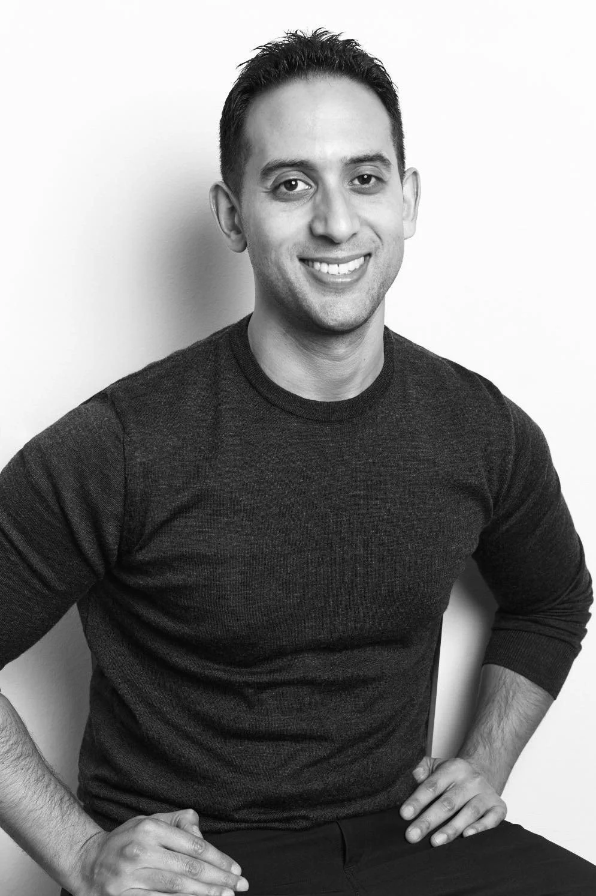

Sports injury & osteopathy
Christian Antonee
Specialises in treating sports injuries, repetitive strain injuries and low back pain, combining Exercise Rehabilitation, Osteopathy and Nutritional Science to get clients moving pain-free and keep them fit and strong.
Qualifications
- MSc Osteopathy
- BSc Kinesiology
- Personal Trainer (CSEP), 14 years
- Nutritional Science & Acupuncture